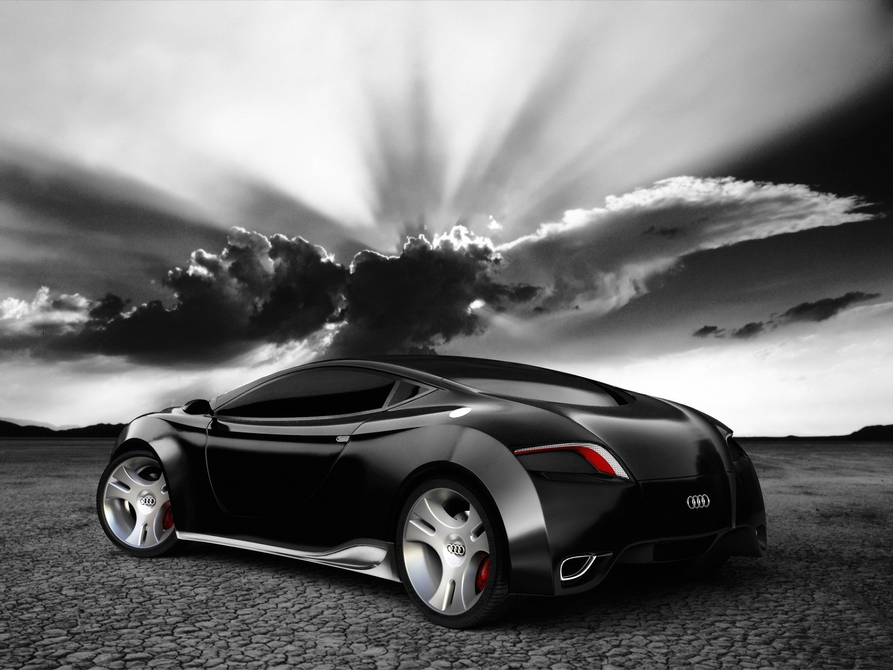

Audi oversees worldwide operations from its headquarters in Ingolstadt, Bavaria, Germany. Audi-branded vehicles are produced in nine production facilities worldwide.
Audi has been a majority owned (99.55%) subsidiary of Volkswagen Group since 1966, following a phased purchase of AUDI AG's predecessor, Auto Union, from Daimler-Benz. Volkswagen relaunched the Audi brand with the 1965 introduction of the Audi F103 series.
The company name is based on the surname of the founder, August Horch. "Horch", meaning "listen", becomes "Audi" when translated into Latin. The four rings of the Audi logo each represent one of four car companies that banded together to create Audi's predecessor company, Auto Union. Audi's slogan is Vorsprung durch Technik, meaning "Advancement through Technology". Recently in the United States, Audi has updated the slogan to "Truth in Engineering". Audi is part of the "German Big 3" luxury automakers, along with BMW and Mercedes-Benz, which are the three best-selling luxury automakers in the world.